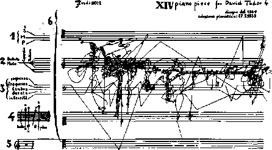

SYLVANO BUSSOTI
The two of us wrote Anti-Oedipus together. Since each of us was several, there was already quite a crowd. Here we have made use of everything that came within range, what was closest as well as farthest away. We have assigned clever pseudonyms to prevent recognition. Why have we kept our own names? Out of habit, purely out of habit. To make ourselves unrecognizable in turn. To render imperceptible, not ourselves, but what makes us act, feel, and think. Also because it’s nice to talk like everybody else, to say the sun rises, when everybody knows it’s only a manner of speaking. To reach, not the point where one no longer says I, but the point where it is no longer of any importance whether one says I. We are no longer ourselves. Each will know his own. We have been aided, inspired, multiplied.
A book has neither object nor subject; it is made of variously formed matters, and very different dates and speeds. To attribute the book to a subject is to overlook this working of matters, and the exteriority of their relations. It is to fabricate a beneficent God to explain geological movements. In a book, as in all things, there are lines of articulation or segmentarity, strata and territories; but also lines of flight, movements of deterritorialization and destratification. Comparative rates of flow on these lines produce phenomena of relative slowness and viscosity, or, on the contrary, of acceleration and rupture. All this, lines and measurable speeds, constitutes an assemblage. A book is an assemblage of this kind, and as such is unattributable. It is a multiplicity — but we don’t know yet what the multiple entails when it is no longer attributed, that is, after it has been elevated to the status of a substantive. One side of a machinic assemblage faces the strata, which doubtless make it a kind of organism, or signifying totality, or determination attributable to a subject; it also has a side facing a body without organs, which is continually dismantling the organism, causing asignifying particles or pure intensities to pass or circulate, and attributing to itself subjects that it leaves with nothing more than a name as the trace of an intensity. What is the body without organs of a book? There are several, depending on the nature of the lines considered, their particular grade or density, and the possibility of their converging on a “plane of consistency” assuring their selection. Here, as elsewhere, the units of measure are what is essential: quantify writing. There is no difference between what a book talks about and how it is made. Therefore a book also has no object. As an assemblage, a book has only itself, in connection with other assemblages and in relation to other bodies without organs. We will never ask what a book means, as signified or signifier; we will not look for anything to understand in it. We will ask what it functions with, in connection with what other things it does or does not transmit intensities, in which other multiplicities its own are inserted and metamorphosed, and with what bodies without organs it makes its own converge. A book exists only through the outside and on the outside. A book itself is a little machine; what is the relation (also measurable) of this literary machine to a war machine, love machine, revolutionary machine, etc. — and an abstract machine that sweeps them along? We have been criticized for overquoting literary authors. But when one writes, the only question is which other machine the literary machine can be plugged into, must be plugged into in order to work. Kleist and a mad war machine, Kafka and a most extraordinary bureaucratic machine … (What if one became animal or plant through literature, which certainly does not mean literarily? Is it not first through the voice that one becomes animal?) Literature is an assemblage. It has nothing to do with ideology. There is no ideology and never has been. All we talk about are multiplicities, lines, strata and segmentarities, lines of flight and intensities, machinic assemblages and their various types, bodies without organs and their construction and selection, the plane of consistency, and in each case the units of measure. Stratometers, deleometers, BwO units of density, BwO units of convergence: Not only do these constitute a quantification of writing, but they define writing as always the measure of something else. Writing has nothing to do with signifying. It has to do with surveying, mapping, even realms that are yet to come.
A first type of book is the root-book. The tree is already the image of the world, or the root the image of the world-tree. This is the classical book, as noble, signifying, and subjective organic interiority (the strata of the book). The book imitates the world, as art imitates nature: by procedures specific to it that accomplish what nature cannot or can no longer do. The law of the book is the law of reflection, the One that becomes two. How could the law of the book reside in nature, when it is what presides over the very division between world and book, nature and art? One becomes two: whenever we encounter this formula, even stated strategically by Mao or understood in the most “dialectical” way possible, what we have before us is the most classical and well reflected, oldest, and weariest kind of thought. Nature doesn’t work that way: in nature, roots are taproots with a more multiple, lateral, and circular system of ramification, rather than a dichotomous one. Thought lags behind nature. Even the book as a natural reality is a taproot, with its pivotal spine and surrounding leaves. But the book as a spiritual reality, the Tree or Root as an image, endlessly develops the law of the One that becomes two, then of the two that become four… Binary logic is the spiritual reality of the root-tree. Even a discipline as “advanced” as linguistics retains the root-tree as its fundamental image, and thus remains wedded to classical reflection (for example, Chomsky and his grammatical trees, which begin at a point S and proceed by dichotomy). This is as much as to say that this system of thought has never reached an understanding of multiplicity: in order to arrive at two following a spiritual method it must assume a strong principal unity. On the side of the object, it is no doubt possible, following the natural method, to go directly from One to three, four, or five, but only if there is a strong principal unity available, that of the pivotal taproot supporting the secondary roots. That doesn’t get us very far. The binary logic of dichotomy has simply been replaced by biunivocal relationships between successive circles. The pivotal taproot provides no better understanding of multiplicity than the dichotomous root. One operates in the object, the other in the subject. Binary logic and biunivocal relationships still dominate psychoanalysis (the tree of delusion in the Freudian interpretation of Schreber’s case), linguistics, structuralism, and even information science.
The radicle-system, or fascicular root, is the second figure of the book, to which our modernity pays willing allegiance. This time, the principal root has aborted, or its tip has been destroyed; an immediate, indefinite multiplicity of secondary roots grafts onto it and undergoes a flourishing development. This time, natural reality is what aborts the principal root, but the root’s unity subsists, as past or yet to come, as possible. We must ask if reflexive, spiritual reality does not compensate for this state of things by demanding an even more comprehensive secret unity, or a more extensive totality. Take William Burroughs’s cut-up method: the folding of one text onto another, which constitutes multiple and even adventitious roots (like a cutting), implies a supplementary dimension to that of the texts under consideration. In this supplementary dimension of folding, unity continues its spiritual labor. That is why the most resolutely fragmented work can also be presented as the Total Work or Magnum Opus. Most modern methods for making series proliferate or a multiplicity grow are perfectly valid in one direction, for example, a linear direction, whereas a unity of totalization asserts itself even more firmly in another, circular or cyclic, dimension. Whenever a multiplicity is taken up in a structure, its growth is offset by a reduction in its laws of combination. The abortionists of unity are indeed angel makers, doctores angelici, because they affirm a properly angelic and superior unity. Joyce’s words, accurately described as having “multiple roots,” shatter the linear unity of the word, even of language, only to posit a cyclic unity of the sentence, text, or knowledge. Nietzsche’s aphorisms shatter the linear unity of knowledge, only to invoke the cyclic unity of the eternal return, present as the nonknown in thought. This is as much as to say that the fascicular system does not really break with dualism, with the complementarity between a subject and an object, a natural reality and a spiritual reality: unity is consistently thwarted and obstructed in the object, while a new type of unity triumphs in the subject. The world has lost its pivot; the subject can no longer even dichotomize, but accedes to a higher unity, of ambivalence or overdetermination, in an always supplementary dimension to that of its object. The world has become chaos, but the book remains the image of the world: radicle-chaosmos rather than root-cosmos. A strange mystification: a book all the more total for being fragmented. At any rate, what a vapid idea, the book as the image of the world. In truth, it is not enough to say, “Long live the multiple,” difficult as it is to raise that cry. No typographical, lexical, or even syntactical cleverness is enough to make it heard. The multiple must be made, not by always adding a higher dimension, but rather in the simplest of ways, by dint of sobriety, with the number of dimensions one already has available — always n - 1 (the only way the one belongs to the multiple: always subtracted). Subtract the unique from the multiplicity to be constituted; write at n - 1 dimensions. A system of this kind could be called a rhizome. A rhizome as subterranean stem is absolutely different from roots and radicles. Bulbs and tubers are rhizomes. Plants with roots or radicles may be rhizomorphic in other respects altogether: the question is whether plant life in its specificity is not entirely rhizomatic. Even some animals are, in their pack form. Rats are rhizomes. Burrows are too, in all of their functions of shelter, supply, movement, evasion, and breakout. The rhizome itself assumes very diverse forms, from ramified surface extension in all directions to concretion into bulbs and tubers. When rats swarm over each other. The rhizome includes the best and the worst: potato and couchgrass, or the weed. Animal and plant, couchgrass is crabgrass. We get the distinct feeling that we will convince no one unless we enumerate certain approximate characteristics of the rhizome.
1 and 2. Principles of connection and heterogeneity: any point of a rhizome can be connected to anything other, and must be. This is very different from the tree or root, which plots a point, fixes an order. The linguistic tree on the Chomsky model still begins at a point S and proceeds by dichotomy. On the contrary, not every trait in a rhizome is necessarily linked to a linguistic feature: semiotic chains of every nature are connected to very diverse modes of coding (biological, political, economic, etc.) that bring into play not only different regimes of signs but also states of things of differing status. Collective assemblages of enunciation function directly within machinic assemblages; it is not impossible to make a radical break between regimes of signs and their objects. Even when linguistics claims to confine itself to what is explicit and to make no presuppositions about language, it is still in the sphere of a discourse implying particular modes of assemblage and types of social power. Chomsky’s grammaticality, the categorical S symbol that dominates every sentence, is more fundamentally a marker of power than a syntactic marker: you will construct grammatically correct sentences, you will divide each statement into a noun phrase and a verb phrase (first dichotomy…). Our criticism of these linguistic models is not that they are too abstract but, on the contrary, that they are not abstract enough, that they do not reach the abstract machine that connects a language to the semantic and pragmatic contents of statements, to collective assemblages of enunciation, to a whole micropolitics of the social field. A rhizome ceaselessly establishes connections between semiotic chains, organizations of power, and circumstances relative to the arts, sciences, and social struggles. A semiotic chain is like a tuber agglomerating very diverse acts, not only linguistic, but also perceptive, mimetic, gestural, and cognitive: there is no language in itself, nor are there any linguistic universals, only a throng of dialects, patois, slangs, and specialized languages. There is no ideal speaker-listener, any more than there is a homogeneous linguistic community. Language is, in Weinreich’s words, “an essentially heterogeneous reality.”1 There is no mother tongue, only a power takeover by a dominant language within a political multiplicity. Language stabilizes around a parish, a bishopric, a capital. It forms a bulb. It evolves by subterranean stems and flows, along river valleys or train tracks; it spreads like a patch of oil.2 It is always possible to break a language down into internal structural elements, an undertaking not fundamentally different from a search for roots. There is always something genealogical about a tree. It is not a method for the people. A method of the rhizome type, on the contrary, can analyze language only by decentering it onto other dimensions and other registers. A language is never closed upon itself, except as a function of impotence.
Principle of multiplicity: it is only when the multiple is effectively treated as a substantive, “multiplicity,” that it ceases to have any relation to the One as subject or object, natural or spiritual reality, image and world. Multiplicities are rhizomatic, and expose arborescent pseudomulti-plicities for what they are. There is no unity to serve as a pivot in the object, or to divide in the subject. There is not even the unity to abort in the object or “return” in the subject. A multiplicity has neither subject nor object, only determinations, magnitudes, and dimensions that cannot increase in number without the multiplicity changing in nature (the laws of combination therefore increase in number as the multiplicity grows). Puppet strings, as a rhizome or multiplicity, are tied not to the supposed will of an artist or puppeteer but to a multiplicity of nerve fibers, which form another puppet in other dimensions connected to the first: “Call the strings or rods that move the puppet the weave. It might be objected that its multiplicity resides in the person of the actor, who projects it into the text. Granted; but the actor’s nerve fibers in turn form a weave. And they fall through the gray matter, the grid, into the undifferentiated… . The interplay approximates the pure activity of weavers attributed in myth to the Fates or Norns.”3 An assemblage is precisely this increase in the dimensions of a multiplicity that necessarily changes in nature as it expands its connections. There are no points or positions in a rhizome, such as those found in a structure, tree, or root. There are only lines. When Glenn Gould speeds up the performance of a piece, he is not just displaying virtuosity, he is transforming the musical points into lines, he is making the whole piece proliferate. The number is no longer a universal concept measuring elements according to their emplacement in a given dimension, but has itself become a multiplicity that varies according to the dimensions considered (the primacy of the domain over a complex of numbers attached to that domain). We do not have units (unites) of measure, only multiplicities or varieties of measurement. The notion of unity (unite) appears only when there is a power takeover in the multiplicity by the signifier or a corresponding subjectification proceeding: This is the case for a pivot-unity forming the basis for a set of biunivocal relationships between objective elements or points, or for the One that divides following the law of a binary logic of differentiation in the subject. Unity always operates in an empty dimension supplementary to that of the system considered (overcoding).
The point is that a rhizome or multiplicity never allows itself to be overcoded, never has available a supplementary dimension over and above its number of lines, that is, over and above the multiplicity of numbers attached to those lines. All multiplicities are flat, in the sense that they fill or occupy all of their dimensions: we will therefore speak of a plane of consistency of multiplicities, even though the dimensions of this “plane” increase with the number of connections that are made on it. Multiplicities are defined by the outside: by the abstract line, the line of flight or deterritorialization according to which they change in nature and connect with other multiplicities. The plane of consistency (grid) is the outside of all multiplicities. The line of flight marks: the reality of a finite number of dimensions that the multiplicity effectively fills; the impossibility of a supplementary dimension, unless the multiplicity is transformed by the line of flight; the possibility and necessity of flattening all of the multiplicities on a single plane of consistency or exteriority, regardless of their number of dimensions. The ideal for a book would be to lay everything out on a plane of exteriority of this kind, on a single page, the same sheet: lived events, historical determinations, concepts, individuals, groups, social formations. Kleist invented a writing of this type, a broken chain of affects and variable speeds, with accelerations and transformations, always in a relation with the outside. Open rings. His texts, therefore, are opposed in every way to the classical or romantic book constituted by the interiority of a substance or subject. The war machine-book against the State apparatus-book. Flat multiplicities of n dimensions are asignifying and asubjective. They are designated by indefinite articles, or rather by partitives (some couchgrass, some of a rhizome…).
Principle of asignifying rupture: against the oversignifying breaks separating structures or cutting across a single structure. A rhizome may be broken, shattered at a given spot, but it will start up again on one of its old lines, or on new lines. You can never get rid of ants because they form an animal rhizome that can rebound time and again after most of it has been destroyed. Every rhizome contains lines of segmentarity according to which it is stratified, territorialized, organized, signified, attributed, etc., as well as lines of deterritorialization down which it constantly flees. There is a rupture in the rhizome whenever segmentary lines explode into a line of flight, but the line of flight is part of the rhizome. These lines always tie back to one another. That is why one can never posit a dualism or a dichotomy, even in the rudimentary form of the good and the bad. You may make a rupture, draw a line of flight, yet there is still a danger that you will reencounter organizations that restratify everything, formations that restore power to a signifier, attributions that reconstitute a subject — anything you like, from Oedipal resurgences to fascist concretions. Groups and individuals contain microfascisms just waiting to crystallize. Yes, couchgrass is also a rhizome. Good and bad are only the products of an active and temporary selection, which must be renewed.
How could movements of deterritorialization and processes of reterri-torialization not be relative, always connected, caught up in one another? The orchid deterritorializes by forming an image, a tracing of a wasp; but the wasp reterritorializes on that image. The wasp is nevertheless deterritorialized, becoming a piece in the orchid’s reproductive apparatus. But it reterritorializes the orchid by transporting its pollen. Wasp and orchid, as heterogeneous elements, form a rhizome. It could be said that the orchid imitates the wasp, reproducing its image in a signifying fashion (mimesis, mimicry, lure, etc.). But this is true only on the level of the strata — a parallelism between two strata such that a plant organization on one imitates an animal organization on the other. At the same time, something else entirely is going on: not imitation at all but a capture of code, surplus value of code, an increase in valence, a veritable becoming, a becoming-wasp of the orchid and a becoming-orchid of the wasp. Each of these becomings brings about the deterritorialization of one term and the reterritorialization of the other; the two becomings interlink and form relays in a circulation of intensities pushing the deterritorialization ever further. There is neither imitation nor resemblance, only an exploding of two heterogeneous series on the line of flight composed by a common rhizome that can no longer be attributed to or subjugated by anything signifying. Rimy Chauvin expresses it well: “the aparallel evolution of two beings that have absolutely nothing to do with each other.”4 More generally, evolutionary schemas may be forced to abandon the old model of the tree and descent. Under certain conditions, a virus can connect to germ cells and transmit itself as the cellular gene of a complex species; moreover, it can take flight, move into the cells of an entirely different species, but not without bringing with it “genetic information” from the first host (for example, Benveniste and Todaro’s current research on a type C virus, with its double connection to baboon DNA and the DNA of certain kinds of domestic cats). Evolutionary schemas would no longer follow models of arborescent descent going from the least to the most differentiated, but instead a rhizome operating immediately in the heterogeneous and jumping from one already differentiated line to another.5 Once again, there is aparallel evolution, of the baboon and the cat; it is obvious that they are not models or copies of each other (a becoming-baboon in the cat does not mean that the cat “plays” baboon). We form a rhizome with our viruses, or rather our viruses cause us to form a rhizome with other animals. As Francois Jacob says, transfers of genetic material by viruses or through other procedures, fusions of cells originating in different species, have results analogous to those of “the abominable couplings dear to antiquity and the Middle Ages.”6 Transversal communications between different lines scramble the genealogical trees. Always look for the molecular, or even submolecular, particle with which we are allied. We evolve and die more from our polymorphous and rhizomatic flus than from hereditary diseases, or diseases that have their own line of descent. The rhizome is an anti-genealogy.
The same applies to the book and the world: contrary to a deeply rooted belief, the book is not an image of the world. It forms a rhizome with the world, there is an aparallel evolution of the book and the world; the book assures the deterritorialization of the world, but the world effects a reterri-torialization of the book, which in turn deterritorializes itself in the world (if it is capable, if it can). Mimicry is a very bad concept, since it relies on binary logic to describe phenomena of an entirely different nature. The crocodile does not reproduce a tree trunk, any more than the chameleon reproduces the colors of its surroundings. The Pink Panther imitates nothing, it reproduces nothing, it paints the world its color, pink on pink; this is its becoming-world, carried out in such a way that it becomes imperceptible itself, asignifying, makes its rupture, its own line of flight, follows its “aparallel evolution” through to the end. The wisdom of the plants: even when they have roots, there is always an outside where they form a rhizome with something else — with the wind, an animal, human beings (and there is also an aspect under which animals themselves form rhizomes, as do people, etc.). “Drunkenness as a triumphant irruption of the plant in us.” Always follow the rhizome by rupture; lengthen, prolong, and relay the line of flight; make it vary, until you have produced the most abstract and tortuous of lines of n dimensions and broken directions. Conjugate deterritorialized flows. Follow the plants: you start by delimiting a first line consisting of circles of convergence around successive singularities; then you see whether inside that line new circles of convergence establish themselves, with new points located outside the limits and in other directions. Write, form a rhizome, increase your territory by deterritorialization, extend the line of flight to the point where it becomes an abstract machine covering the entire plane of consistency. “Go first to your old plant and watch carefully the watercourse made by the rain. By now the rain must have carried the seeds far away. Watch the crevices made by the runoff, and from them determine the direction of the flow. Then find the plant that is growing at the farthest point from your plant. All the devil’s weed plants that are growing in between are yours. Later… you can extend the size of your territory by following the watercourse from each point along the way.”7 Music has always sent out lines of flight, like so many “transformational multiplicities,” even overturning the very codes that structure or arborify it; that is why musical form, right down to its ruptures and proliferations, is comparable to a weed, a rhizome.8
5 and 6. Principle of cartography and decalcomania: a rhizome is not amenable to any structural or generative model. It is a stranger to any idea of genetic axis or deep structure. A genetic axis is like an objective pivotal unity upon which successive stages are organized; a deep structure is more like a base sequence that can be broken down into immediate constituents, while the unity of the product passes into another, transformational and subjective, dimension. This does not constitute a departure from the representative model of the tree, or root — pivotal taproot or fascicles (for example, Chomsky’s “tree” is associated with a base sequence and represents the process of its own generation in terms of binary logic). A variation on the oldest form of thought. It is our view that genetic axis and profound structure are above all infinitely reproducible principles of tracing. All of tree logic is a logic of tracing and reproduction. In linguistics as in psychoanalysis, its object is an unconscious that is itself representative, crystallized into codified complexes, laid out along a genetic axis and distributed within a syntagmatic structure. Its goal is to describe a de facto state, to maintain balance in intersubjective relations, or to explore an unconscious that is already there from the start, lurking in the dark recesses of memory and language. It consists of tracing, on the basis of an overcoding structure or supporting axis, something that comes ready-made. The tree articulates and hierarchizes tracings; tracings are like the leaves of a tree.
The rhizome is altogether different, a map and not a tracing. Make a map, not a tracing. The orchid does not reproduce the tracing of the wasp; it forms a map with the wasp, in a rhizome. What distinguishes the map from the tracing is that it is entirely oriented toward an experimentation in contact with the real. The map does not reproduce an unconscious closed in upon itself; it constructs the unconscious. It fosters connections between fields, the removal of blockages on bodies without organs, the maximum opening of bodies without organs onto a plane of consistency. It is itself a part of the rhizome. The map is open and connectable in all of its dimensions; it is detachable, reversible, susceptible to constant modification. It can be torn, reversed, adapted to any kind of mounting, reworked by an individual, group, or social formation. It can be drawn on a wall, conceived of as a work of art, constructed as a political action or as a meditation. Perhaps one of the most important characteristics of the rhizome is that it always has multiple entryways; in this sense, the burrow is an animal rhizome, and sometimes maintains a clear distinction between the line of flight as passageway and storage or living strata (cf. the muskrat). A map has multiple entryways, as opposed to the tracing, which always comes back “to the same.” The map has to do with performance, whereas the tracing always involves an alleged “competence.” Unlike psychoanalysis, psychoanalytic competence (which confines every desire and statement to a genetic axis or overcoding structure, and makes infinite, monotonous tracings of the stages on that axis or the constituents of that structure), schizoanalysis rejects any idea of pretraced destiny, whatever name is given to it — divine, anagogic, historical, economic, structural, hereditary, or syntagmatic. (It is obvious that Melanie Klein has no understanding of the cartography of one of her child patients, Little Richard, and is content to make ready-made tracings — Oedipus, the good daddy and the bad daddy, the bad mommy and the good mommy — while the child makes a desperate attempt to carry out a performance that the psychoanalyst totally misconstrues.)9 Drives and part-objects are neither stages on a genetic axis nor positions in a deep structure; they are political options for problems, they are entryways and exits, impasses the child lives out politically, in other words, with all the force of his or her desire.
Have we not, however, reverted to a simple dualism by contrasting maps to tracings, as good and bad sides? Is it not of the essence of the map to be traceable? Is it not of the essence of the rhizome to intersect roots and sometimes merge with them? Does not a map contain phenomena of redundancy that are already like tracings of its own? Does not a multiplicity have strata upon which unifications and totalizations, massifications, mimetic mechanisms, signifying power takeovers, and subjective attributions take root? Do not even lines of flight, due to their eventual divergence, reproduce the very formations their function it was to dismantle or outflank? But the opposite is also true. It is a question of method: the tracing should always be put back on the map. This operation and the previous one are not at all symmetrical. For it is inaccurate to say that a tracing reproduces the map. It is instead like a photograph or X ray that begins by selecting or isolating, by artificial means such as colorations or other restrictive procedures, what it intends to reproduce. The imitator always creates the model, and attracts it. The tracing has already translated the map into an image; it has already transformed the rhizome into roots and radicles. It has organized, stabilized, neutralized the multiplicities according to the axes of signifiance and subjectification belonging to it. It has generated, structurahzed the rhizome, and when it thinks it is reproducing something else it is in fact only reproducing itself. That is why the tracing is so dangerous. It injects redundancies and propagates them. What the tracing reproduces of the map or rhizome are only the impasses, blockages, incipient taproots, or points of structuration. Take a look at psychoanalysis and linguistics: all the former has ever made are tracings or photos of the unconscious, and the latter of language, with all the betrayals that implies (it’s not surprising that psychoanalysis tied its fate to that of linguistics).
Look at what happened to Little Hans already, an example of child psychoanalysis at its purest: they kept on BREAKING HIS RHIZOME and BLOTCHING HIS MAP, setting it straight for him, blocking his every way out, until he began to desire his own shame and guilt, until they had rooted shame and guilt in him, PHOBIA (they barred him from the rhizome of the building, then from the rhizome of the street, they rooted him in his parents’ bed, they radicled him to his own body, they fixated him on Professor Freud). Freud explicitly takes Little Hans’s cartography into account, but always and only in order to project it back onto the family photo. And look what Melanie Klein did to Little Richard’s geopolitical maps: she developed photos from them, made tracings of them. Strike the pose or follow the axis, genetic stage or structural destiny — one way or the other, your rhizome will be broken. You will be allowed to live and speak, but only after every outlet has been obstructed. Once a rhizome has been obstructed, arborified, it’s all over, no desire stirs; for it is always by rhizome that desire moves and produces. Whenever desire climbs a tree, internal repercussions trip it up and it falls to its death; the rhizome, on the other hand, acts on desire by external, productive outgrowths.
That is why it is so important to try the other, reverse but nonsymmetrical, operation. Plug the tracings back into the map, connect the roots or trees back up with a rhizome. In the case of Little Hans, studying the unconscious would be to show how he tries to build a rhizome, with the family house but also with the line of flight of the building, the street, etc.; how these lines are blocked, how the child is made to take root in the family, be photographed under the father, be traced onto the mother’s bed; then how Professor Freud’s intervention assures a power takeover by the signifier, a subjectification of affects; how the only escape route left to the child is a becoming-animal perceived as shameful and guilty (the becoming-horse of Little Hans, a truly political option). But these impasses must always be resituated on the map, thereby opening them up to possible lines of flight. The same applies to the group map: show at what point in the rhizome there form phenomena of massification, bureaucracy, leadership, fascization, etc., which lines nevertheless survive, if only underground, continuing to make rhizome in the shadows. Deligny’s method: map the gestures and movements of an autistic child, combine several maps for the same child, for several different children.10 If it is true that it is of the essence of the map or rhizome to have multiple entryways, then it is plausible that one could even enter them through tracings or the root-tree, assuming the necessary precautions are taken (once again, one must avoid any Manichaean dualism). For example, one will often be forced to take dead ends, to work with signifying powers and subjective affections, to find a foothold in formations that are Oedipal or paranoid or even worse, rigidified territorialities that open the way for other transformational operations. It is even possible for psychoanalysis to serve as a foothold, in spite of itself. In other cases, on the contrary, one will bolster oneself directly on a line of flight enabling one to blow apart strata, cut roots, and make new connections. Thus, there are very diverse map-tracing, rhizome-root assemblages, with variable coefficients of deterritorialization. There exist tree or root structures in rhizomes; conversely, a tree branch or root division may begin to burgeon into a rhizome. The coordinates are determined not by theoretical analyses implying universals but by a pragmatics composing multiplicities or aggregates of intensities. A new rhizome may form in the heart of a tree, the hollow of a root, the crook of a branch. Or else it is a microscopic element of the root-tree, a radicle, that gets rhizome production going. Accounting and bureaucracy proceed by tracings: they can begin to burgeon nonetheless, throwing out rhizome stems, as in a Kafka novel. An intensive trait starts working for itself, a hallucinatory perception, synesthesia, perverse mutation, or play of images shakes loose, challenging the hegemony of the signifier. In the case of the child, gestural, mimetic, ludic, and other semiotic systems regain their freedom and extricate themselves from the “tracing,” that is, from the dominant competence of the teacher’s language — a microscopic event upsets the local balance of power. Similarly, generative trees constructed according to Chomsky’s syntagmatic model can open up in all directions, and in turn form a rhizome.11 To be rhizomorphous is to produce stems and filaments that seem to be roots, or better yet connect with them by penetrating the trunk, but put them to strange new uses. We’re tired of trees. We should stop believing in trees, roots, and radicles. They’ve made us suffer too much. All of arborescent culture is founded on them, from biology to linguistics. Nothing is beautiful or loving or political aside from underground stems and aerial roots, adventitious growths and rhizomes. Amsterdam, a city entirely without roots, a rhizome-city with its stem-canals, where utility connects with the greatest folly in relation to a commercial war machine. Thought is not arborescent, and the brain is not a rooted or ramified matter. What are wrongly called “dendrites” do not assure the connection of neurons in a continuous fabric. The discontinuity between cells, the role of the axons, the functioning of the synapses, the existence of synaptic microfissures, the leap each message makes across these fissures, make the brain a multiplicity immersed in its plane of consistency or neuroglia, a whole uncertain, probabilistic system (“the uncertain nervous system”). Many people have a tree growing in their heads, but the brain itself is much more a grass than a tree. “The axon and the dendrite twist around each other like bindweed around brambles, with synapses at each of the thorns.”12 The same goes for memory. Neurologists and psychophysiologists distinguish between long-term memory and short-term memory (on the order of a minute). The difference between them is not simply quantitative: short-term memory is of the rhizome or diagram type, and long-term memory is arborescent and centralized (imprint, engram, tracing, or photograph). Short-term memory is in no way subject to a law of contiguity or immediacy to its object; it can act at a distance, come or return a long time after, but always under conditions of discontinuity, rupture, and multiplicity. Furthermore, the difference between the two kinds of memory is not that of two temporal modes of apprehending the same thing; they do not grasp the same thing, memory, or idea. The splendor of the short-term Idea: one writes using short-term memory, and thus short-term ideas, even if one reads or rereads using long-term memory of long-term concepts. Short-term memory includes forgetting as a process; it merges not with the instant but instead with the nervous, temporal, and collective rhizome. Long-term memory (family, race, society, or civilization) traces and translates, but what it translates continues to act in it, from a distance, offbeat, in an “untimely” way, not instantaneously.
The tree and root inspire a sad image of thought that is forever imitating the multiple on the basis of a centered or segmented higher unity. If we consider the set, branches-roots, the trunk plays the role of opposed segment for one of the subsets running from bottom to top: this kind of segment is a “link dipole,” in contrast to the “unit dipoles” formed by spokes radiating from a single center.13 Even if the links themselves proliferate, as in the radicle system, one can never get beyond the One-Two, and fake multiplicities. Regenerations, reproductions, returns, hydras, and medusas do not get us any further. Arborescent systems are hierarchical systems with centers of signifiance and subjectification, central automata like organized memories. In the corresponding models, an element only receives information from a higher unit, and only receives a subjective affection along preestablished paths. This is evident in current problems in information science and computer science, which still cling to the oldest modes of thought in that they grant all power to a memory or central organ. Pierre Rosenstiehl and Jean Petitot, in a fine article denouncing “the imagery of command trees” (centered systems or hierarchical structures), note that “accepting the primacy of hierarchical structures amounts to giving arborescent structures privileged status…. The arborescent form admits of topological explanation…. In a hierarchical system, an individual has only one active neighbor, his or her hierarchical superior…. The channels of transmission are preestablished: the arborescent system preexists the individual, who is integrated into it at an allotted place” (signifiance and subjectification). The authors point out that even when one thinks one has reached a multiplicity, it may be a false one — of what we call the radicle type — because its ostensibly nonhierarchical presentation or statement in fact only admits of a totally hierarchical solution. An example is the famous friendship theorem: “If any two given individuals in a society have precisely one mutual friend, then there exists an individual who is the friend of all the others.” (Rosenstiehl and Petitot ask who that mutual friend is. Who is “the universal friend in this society of couples: the master, the confessor, the doctor? These ideas are curiously far removed from the initial axioms.” Who is this friend of humankind? Is it the .pMosopher as he appears in classical thought, even if he is an aborted unity that makes itself felt only through its absence or subjectivity, saying all the while, I know nothing, I am nothing?) Thus the authors speak of dictatorship theorems. Such is indeed the principle of roots-trees, or their outcome: the radicle solution, the structure of Power.14
To these centered systems, the authors contrast acentered systems, finite networks of automata in which communication runs from any neighbor to any other, the stems or channels do not preexist, and all individuals are interchangeable, defined only by their state at a given moment — such that the local operations are coordinated and the final, global result synchronized without a central agency. Transduction of intensive states replaces topology, and “the graph regulating the circulation of information is in a way the opposite of the hierarchical graph.… There is no reason for the graph to be a tree” (we have been calling this kind of graph a map). The problem of the war machine, or the firing squad: is a general necessary for n individuals to manage to fire in unison? The solution without a General is to be found in an acentered multiplicity possessing a finite number of states with signals to indicate corresponding speeds, from a war rhizome or guerrilla logic point of view, without any tracing, without any copying of a central order. The authors even demonstrate that this kind of machinic multiplicity, assemblage, or society rejects any centralizing or unifying automaton as an “asocial intrusion.”15 Under these conditions, n is in fact always n - 1. Rosenstiehl and Petitot emphasize that the opposition, centered-acentered, is valid less as a designation for things than as a mode of calculation applied to things. Trees may correspond to the rhizome, or they may burgeon into a rhizome. It is true that the same thing is generally susceptible to both modes of calculation or both types of regulation, but not without undergoing a change in state. Take psychoanalysis as an example again: it subjects the unconscious to arborescent structures, hierarchical graphs, recapitulatory memories, central organs, the phallus, the phallus-tree — not only in its theory but also in its practice of calculation and treatment. Psychoanalysis cannot change its method in this regard: it bases its own dictatorial power upon a dictatorial conception of the unconscious. Psychoanalysis’s margin of maneuverability is therefore very limited. In both psychoanalysis and its object, there is always a general, always a leader (General Freud). Schizoanalysis, on the other hand, treats the unconscious as an acentered system, in other words, as a machinic network of finite automata (a rhizome), and thus arrives at an entirely different state of the unconscious. These same remarks apply to linguistics; Rosenstiehl and Petitot are right to bring up the possibility of an “acentered organization of a society of words.” For both statements and desires, the issue is never to reduce the unconscious or to interpret it or to make it signify according to a tree model. The issue is to produce the unconscious, and with it new statements, different desires: the rhizome is precisely this production of the unconscious.
It is odd how the tree has dominated Western reality and all of Western thought, from botany to biology and anatomy, but also gnosiology, theology, ontology, all of philosophy…: the root-foundation, Grund, racine, fondement. The West has a special relation to the forest, and deforestation; the fields carved from the forest are populated with seed plants produced by cultivation based on species lineages of the arborescent type; animal raising, carried out on fallow fields, selects lineages forming an entire animal arborescence. The East presents a different figure: a relation to the steppe and the garden (or in some cases, the desert and the oasis), rather than forest and field; cultivation of tubers by fragmentation of the individual; a casting aside or bracketing of animal raising, which is confined to closed spaces or pushed out onto the steppes of the nomads. The West: agriculture based on a chosen lineage containing a large number of variable individuals. The East: horticulture based on a small number of individuals derived from a wide range of “clones.” Does not the East, Oceania in particular, offer something like a rhizomatic model opposed in every respect to the Western model of the tree? Andre Haudricourt even sees this as the basis for the opposition between the moralities or philosophies of transcendence dear to the West and the immanent ones of the East: the God who sows and reaps, as opposed to the God who replants and unearths (replanting of offshoots versus sowing of seeds).16 Transcendence: a specifically European disease. Neither is music the same, the music of the earth is different, as is sexuality: seed plants, even those with two sexes in the same plant, subjugate sexuality to the reproductive model; the rhizome, on the other hand, is a liberation of sexuality not only from reproduction but also from genitality. Here in the West, the tree has implanted itself in our bodies, rigidifying and stratifying even the sexes. We have lost the rhizome, or the grass. Henry Miller: “China is the weed in the human cabbage patch.
… The weed is the Nemesis of human endeavor…. Of all the imaginary existences we attribute to plant, beast and star the weed leads the most satisfactory life of all. True, the weed produces no lilies, no battleships, no Sermons on the Mount…. Eventually the weed gets the upper hand. Eventually things fall back into a state of China. This condition is usually referred to by historians as the Dark Age. Grass is the only way out…. The weed exists only to fill the waste spaces left by cultivated areas. It grows between, among other things. The lily is beautiful, the cabbage is provender, the poppy is maddening — but the weed is rank growth …: it points a moral.”17 Which China is Miller talking about? The old China, the new, an imaginary one, or yet another located on a shifting map?
America is a special case. Of course it is not immune from domination by trees or the search for roots. This is evident even in the literature, in the quest for a national identity and even for a European ancestry or genealogy (Kerouac going off in search of his ancestors). Nevertheless, everything important that has happened or is happening takes the route of the American rhizome: the beatniks, the underground, bands and gangs, successive lateral offshoots in immediate connection with an outside. American books are different from European books, even when the American sets off in pursuit of trees. The conception of the book is different. Leaves of Grass. And directions in America are different: the search for arborescence and the return to the Old World occur in the East. But there is the rhizomatic West, with its Indians without ancestry, its ever-receding limit, its shifting and displaced frontiers. There is a whole American “map” in the West, where even the trees form rhizomes. America reversed the directions: it put its Orient in the West, as if it were precisely in America that the earth came full circle; its West is the edge of the East.18 (India is not the intermediary between the Occident and the Orient, as Haudricourt believed: America is the pivot point and mechanism of reversal.) The American singer Patti Smith sings the bible of the American dentist: Don’t go for the root, follow the canal…
Are there not also two kinds of bureaucracy, or even three (or still more)? Western bureaucracy: its agrarian, cadastral origins; roots and fields; trees and their role as frontiers; the great census of William the Conqueror; feudalism; the policies of the kings of France; making property the basis of the State; negotiating land through warfare, litigation, and marriages. The kings of France chose the lily because it is a plant with deep roots that clings to slopes. Is bureaucracy the same in the Orient? Of course it is all too easy to depict an Orient of rhizomes and immanence; yet it is true that in the Orient the State does not act following a schema of arborescence corresponding to preestablished, arborified, and rooted classes; its bureaucracy is one of channels, for example, the much-discussed case of hydraulic power with “weak property,” in which the State engenders channeled and channelizing classes (cf. the aspects of Wittfogel’s work that have not been refuted).19 The despot acts as a river, not as a fountainhead, which is still a point, a tree-point or root; he flows with the current rather than sitting under a tree; Buddha’s tree itself becomes a rhizome; Mao’s river and Louis’s tree. Has not America acted as an intermediary here as well? For it proceeds both by internal exterminations and liquidations (not only the Indians but also the farmers, etc.), and by successive waves of immigration from the outside. The flow of capital produces an immense channel, a quantification of power with immediate “quanta,” where each person profits from the passage of the money flow in his or her own way (hence the reality-myth of the poor man who strikes it rich and then falls into poverty again): in America everything comes together, tree and channel, root and rhizome. There is no universal capitalism, there is no capitalism in itself; capitalism is at the crossroads of all kinds of formations, it is neocapitalism by nature. It invents its eastern face and western face, and reshapes them both — all for the worst.
At the same time, we are on the wrong track with all these geographical distributions. An impasse. So much the better. If it is a question of showing that rhizomes also have their own, even more rigid, despotism and hierarchy, then fine and good: for there is no dualism, no ontological dualism between here and there, no axiological dualism between good and bad, no blend or American synthesis. There are knots of arborescence in rhizomes, and rhizomatic offshoots in roots. Moreover, there are despotic formations of immanence and channelization specific to rhizomes, just as there are anarchic deformations in the transcendent system of trees, aerial roots, and subterranean stems. The important point is that the root-tree and canal-rhizome are not two opposed models: the first operates as a transcendent model and tracing, even if it engenders its own escapes; the second operates as an immanent process that overturns the model and outlines a map, even if it constitutes its own hierarchies, even if it gives rise to a despotic channel. It is not a question of this or that place on earth, or of a given moment in history, still less of this or that category of thought. It is a question of a model that is perpetually in construction or collapsing, and of a process that is perpetually prolonging itself, breaking off and starting up again. No, this is not a new or different dualism. The problem of writing: in order to designate something exactly, anexact expressions are utterly unavoidable. Not at all because it is a necessary step, or because one can only advance by approximations: anexactitude is in no way an approximation; on the contrary, it is the exact passage of that which is under way. We invoke one dualism only in order to challenge another. We employ a dualism of models only in order to arrive at a process that challenges all models. Each time, mental correctives are necessary to undo the dualisms we had no wish to construct but through which we pass. Arrive at the magic formula we all seek — PLURALISM = — via all the dualisms that are the enemy, an entirely necessary enemy, the furniture we are forever rearranging.
Let us summarize the principal characteristics of a rhizome: unlike trees or their roots, the rhizome connects any point to any other point, and its traits are not necessarily linked to traits of the same nature; it brings into play very different regimes of signs, and even nonsign states. The rhizome is reducible neither to the One nor the multiple. It is not the One that becomes Two or even directly three, four, five, etc. It is not a multiple derived from the One, or to which One is added (n + 1). It is composed not of units but of dimensions, or rather directions in motion. It has neither beginning nor end, but always a middle (milieu) from which it grows and which it overspills. It constitutes linear multiplicities with n dimensions having neither subject nor object, which can be laid out on a plane of consistency, and from which the One is always subtracted (n - 1). When a multiplicity of this kind changes dimension, it necessarily changes in nature as well, undergoes a metamorphosis. Unlike a structure, which is defined by a set of points and positions, with binary relations between the points and biunivocal relationships between the positions, the rhizome is made only of lines: lines of segmentarity and stratification as its dimensions, and the line of flight or deterritorialization as the maximum dimension after which the multiplicity undergoes metamorphosis, changes in nature. These lines, or lineaments, should not be confused with lineages of the arborescent type, which are merely localizable linkages between points and positions. Unlike the tree, the rhizome is not the object of reproduction: neither external reproduction as image-tree nor internal reproduction as tree-structure. The rhizome is an antigenealogy. It is a short-term memory, or antimemory. The rhizome operates by variation, expansion, conquest, capture, offshoots. Unlike the graphic arts, drawing, or photography, unlike tracings, the rhizome pertains to a map that must be produced, constructed, a map that is always detachable, connectable, reversible, modifiable, and has multiple entryways and exits and its own lines of flight. It is tracings that must be put on the map, not the opposite. In contrast to centered (even polycentric) systems with hierarchical modes of communication and preestablished paths, the rhizome is an acentered, nonhierarchical, nonsignifying system without a General and without an organizing memory or central automaton, defined solely by a circulation of states. What is at question in the rhizome is a relation to sexuality — but also to the animal, the vegetal, the world, politics, the book, things natural and artificial — that is totally different from the arborescent relation: all manner of “becomings.”
A plateau is always in the middle, not at the beginning or the end. A rhizome is made of plateaus. Gregory Bateson uses the word “plateau” to designate something very special: a continuous, self-vibrating region of intensities whose development avoids any orientation toward a culmination point or external end. Bateson cites Balinese culture as an example: mother-child sexual games, and even quarrels among men, undergo this bizarre intensive stabilization. “Some sort of continuing plateau of intensity is substituted for [sexual] climax,” war, or a culmination point. It is a regrettable characteristic of the Western mind to relate expressions and actions to exterior or transcendent ends, instead of evaluating them on a plane of consistency on the basis of their intrinsic value.20 For example, a book composed of chapters has culmination and termination points. What takes place in a book composed instead of plateaus that communicate with one another across microfissures, as in a brain? We call a “plateau” any multiplicity connected to other multiplicities by superficial underground stems in such a way as to form or extend a rhizome. We are writing this book as a rhizome. It is composed of plateaus. We have given it a circular form, but only for laughs. Each morning we would wake up, and each of us would ask himself what plateau he was going to tackle, writing five lines here, ten there. We had hallucinatory experiences, we watched lines leave one plateau and proceed to another like columns of tiny ants. We made circles of convergence. Each plateau can be read starting anywhere and can be related to any other plateau. To attain the multiple, one must have a method that effectively constructs it; no typographical cleverness, no lexical agility, no blending or creation of words, no syntactical boldness, can substitute for it. In fact, these are more often than not merely mimetic procedures used to disseminate or disperse a unity that is retained in a different dimension for an image-book. Technonarcissism. Typographical, lexical, or syntactic creations are necessary only when they no longer belong to the form of expression of a hidden unity, becoming themselves dimensions of the multiplicity under consideration; we only know of rare successes in this.21 We ourselves were unable to do it. We just used words that in turn function for us as plateaus. RHIZOMATICS = SCHIZOANALYSIS = STRATOANALYSIS = = . These words are concepts, but concepts are lines, which is to say, number systems attached to a particular dimension of the multiplicities (strata, molecular chains, lines of flight or rupture, circles of convergence, etc.). Nowhere do we claim for our concepts the title of a science. We are no more familiar with scientif-icity than we are with ideology; all we know are assemblages. And the only assemblages are machinic assemblages of desire and collective assemblages of enunciation. No signifiance, no subjectification: writing to the «th power (all individuated enunciation remains trapped within the dominant significations, all signifying desire is associated with dominated subjects). An assemblage, in its multiplicity, necessarily acts on semiotic flows, material flows, and social flows simultaneously (independently of any recapitulation that may be made of it in a scientific or theoretical corpus). There is no longer a tripartite division between a field of reality (the world) and a field of representation (the book) and a field of subjectivity (the author). Rather, an assemblage establishes connections between certain multiplicities drawn from each of these orders, so that a book has no sequel nor the world as its object nor one or several authors as its subject. In short, we think that one cannot write sufficiently in the name of an outside. The outside has no image, no signification, no subjectivity. The book as assemblage with the outside, against the book as image of the world. A rhizome-book, not a dichotomous, pivotal, or fascicular book. Never send down roots, or plant them, however difficult it may be to avoid reverting to the old procedures. “Those things which occur to me, occur to me not from the root up but rather only from somewhere about their middle. Let someone then attempt to seize them, let someone attempt to seize a blade of grass and hold fast to it when it begins to grow only from the middle.”22 Why is this so difficult? The question is directly one of perceptual semiotics. It’s not easy to see things in the middle, rather than looking down on them from above or up at them from below, or from left to right or right to left: try it, you’ll see that everything changes. It’s not easy to see the grass in things and in words (similarly, Nietzsche said that an aphorism had to be “ruminated”; never is a plateau separable from the cows that populate it, which are also the clouds in the sky).
History is always written from the sedentary point of view and in the name of a unitary State apparatus, at least a possible one, even when the topic is nomads. What is lacking is a Nomadology, the opposite of a history. There are rare successes in this also, for example, on the subject of the Children’s Crusades: Marcel Schwob’s book multiplies narratives like so many plateaus with variable numbers of dimensions. Then there is Andrzejewski’s book, Les portes du paradis (The gates of paradise), composed of a single uninterrupted sentence; a flow of children; a flow of walking with pauses, straggling, and forward rushes; the semiotic flow of the confessions of all the children who go up to the old monk at the head of the procession to make their declarations; a flow of desire and sexuality, each child having left out of love and more or less directly led by the dark posthumous pederastic desire of the count of Vendome; all this with circles of convergence. What is important is not whether the flows are “One or multiple” — we’re past that point: there is a collective assemblage of enunciation, a machinic assemblage of desire, one inside the other and both plugged into an immense outside that is a multiplicity in any case. A more recent example is Armand Farrachi’s book on the Fourth Crusade, La dislocation, in which the sentences space themselves out and disperse, or else jostle together and coexist, and in which the letters, the typography begin to dance as the crusade grows more delirious.23 These are models of nomadic and rhizomatic writing. Writing weds a war machine and lines of flight, abandoning the strata, segmentarities, sedentarity, the State apparatus. But why is a model still necessary? Aren’t these books still “images” of the Crusades? Don’t they still retain a unity, in Schwob’s case a pivotal unity, in Farrachi’s an aborted unity, and in the most beautiful example, Les portes du paradis, the unity of the funereal count? Is there a need for a more profound nomadism than that of the Crusades, a nomadism of true nomads, or of those who no longer even move or imitate anything? The nomadism of those who only assemble (agencent). How can the book find an adequate outside with which to assemble in heterogeneity, rather than a world to reproduce? The cultural book is necessarily a tracing: already a tracing of itself, a tracing of the previous book by the same author, a tracing of other books however different they may be, an endless tracing of established concepts and words, a tracing of the world present, past, and future. Even the anticultural book may still be burdened by too heavy a cultural load: but it will use it actively, for forgetting instead of remembering, for underdevelopment instead of progress toward development, in nomadism rather than sedentarity, to make a map instead of a tracing. RHIZOMATICS = POP ANALYSIS, even if the people have other things to do besides read it, even if the blocks of academic culture or pseudoscien-tificity in it are still too painful or ponderous. For science would go completely mad if left to its own devices. Look at mathematics: it’s not a science, it’s a monster slang, it’s nomadic. Even in the realm of theory, especially in the realm of theory, any precarious and pragmatic framework is better than tracing concepts, with their breaks and progress changing nothing. Imperceptible rupture, not signifying break. The nomads invented a war machine in opposition to the State apparatus. History has never comprehended nomadism, the book has never comprehended the outside. The State as the model for the book and for thought has a long history: logos, the philosopher-king, the transcendence of the Idea, the interiority of the concept, the republic of minds, the court of reason, the functionaries of thought, man as legislator and subject. The State’s pretension to be a world order, and to root man. The war machine’s relation to an outside is not another “model”; it is an assemblage that makes thought itself nomadic, and the book a working part in every mobile machine, a stem for a rhizome (Kleist and Kafka against Goethe). Write to the nth power, the n - 1 power, write with slogans: Make rhizomes, not roots, never plant! Don’t sow, grow offshoots! Don’t be one or multiple, be multiplicities! Run lines, never plot a point! Speed turns the point into a line!24 Be quick, even when standing still! Line of chance, line of hips, line of flight. Don’t bring out the General in you! Don’t have just ideas, just have an idea (Godard). Have short-term ideas. Make maps, not photos or drawings. Be the Pink Panther and your loves will be like the wasp and the orchid, the cat and the baboon. As they say about old man river:
He don’t plant ‘tatos
Don’t plant cotton
Them that plants them is soon forgotten
But old man river he just keeps rollin’ along
A rhizome has no beginning or end; it is always in the middle, between things, interbeing, intermezzo. The tree is filiation, but the rhizome is alliance, uniquely alliance. The tree imposes the verb “to be,” but the fabric of the rhizome is the conjunction, “and… and… and…” This conjunction carries enough force to shake and uproot the verb “to be.” Where are you going? Where are you coming from? What are you heading for? These are totally useless questions. Making a clean slate, starting or beginning again from ground zero, seeking a beginning or a foundation — all imply a false conception of voyage and movement (a conception that is methodical, pedagogical, initiatory, symbolic…). But Kleist, Lenz, and Biichner have another way of traveling and moving: proceeding from the middle, through the middle, coming and going rather than starting and finishing.25 American literature, and already English literature, manifest this rhizomatic direction to an even greater extent; they know how to move between things, establish a logic of the AND, overthrow ontology, do away with foundations, nullify endings and beginnings. They know how to practice pragmatics. The middle is by no means an average; on the contrary, it is where things pick up speed. Between things does not designate a localizable relation going from one thing to the other and back again, but a perpendicular direction, a transversal movement that sweeps one and the other away, a stream without beginning or end that undermines its banks and picks up speed in the middle